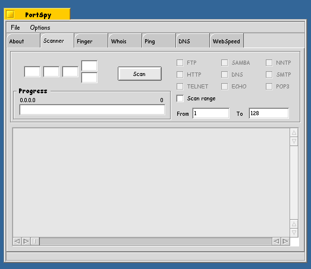
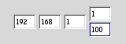
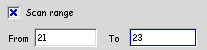
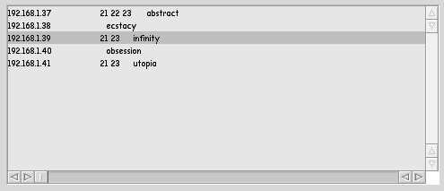

The scanner is one of the most usefull aspects of PortSpy. This is also the one that I get most people asking questions or saying that is confusing. Lets take a look at the view.
The scanner is one of the most usefull aspects of PortSpy. This is also the one that I get most people asking questions or saying that is confusing. Lets take a look at the view.

The scaner is set up to do multiplue IPs and a range of ports. however you can still scan one IP and one port. Lets say you have a network (192.168.1.* - all comupter that have that address) and you want to scann the first 100 computers and see if telnet or ft is running. The IP is entered into the set of text boxes with the first three numbers entered as normal. Then the range you want to scan in the last two. (1 - 100) It should looks something like this:

Now thats set up. If you hit scan you will start with 192.168.1.1 and run through all the ports for that IP then go to the next IP and check all its prots. This will work for our above case just fine (becase the scan rage defaults to 1-128). However we are realy only interested in ftp(21) and telnet(23) So we can significantly speed up our search by makeing the range smaller. Somehing like from 21-23 would do just fine.

Now this will make things go much faster. (Note: in the current version the 'scan range' check box has not effect and can be ignored) So hit the 'Scan' button and let it rip. As I mentiond earlyer PortSpy runs its tools in seperate threads thus letting the GUI still be responsive and update. Also giveing you the ability to Stop the scan or to switch tabs.
While the scann is happening you will see the results as they come in. Most noticable will be the lookup of the name of server your scanning. Bellow is the results of a can of my local computers. As you can see Abstract, Infinity, and Utopia are all running ftp and telnet servers. (Utopia is my BeOS box btw) Also Abstract is running something on port 22. What could it be? Well BeOS includes a services file found in /etc directory (I have also provided a link in the PortSpy directory)
From this file we can look up what server most commonly runst on port 22.
services:
ssh 22/tcp #Secure Shell Login
ssh 22/udp #Secure Shell Login
So I gess Abstract is running a secure shell .. :P

Back to PortSpy docs
PortSpy is copyright YNOP Talton 1999,2000